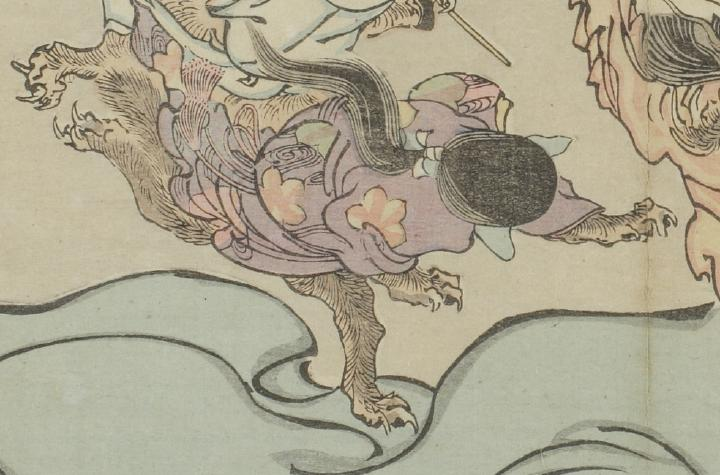

女の化物の後姿。表情はわからないが、手足は獣のように毛むくじゃらで、鋭い爪がある。尻尾が生えている。
出典：親書誌：U426_nichibunken_0093：暁斎百鬼画談；ギョウサイヒャッキガダン／日付：2006／資源識別子：U426_nichibunken_0093_0028_0000
Copyright (c)2010- International Research Center for Japanese Studies, Kyoto, Japan. All rights reserved.